Graphic Designer's Reference
Qt Extended Startup
Themes
Qt Extended has various themable elements
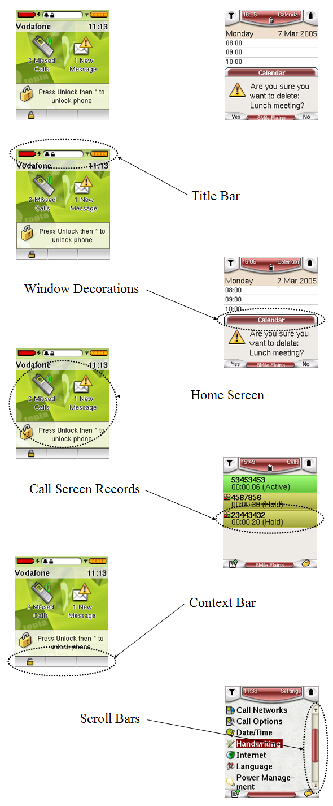
Title Bar
- Always present at the top of the display.
- Can be shaped to allow more seamless integration with applications (it does not need to be rectangular).

Context Bar
- Up to three buttons corresponding to soft keys.
- Can be shaped to allow more seamless integration with applications (it does not need to be rectangular).
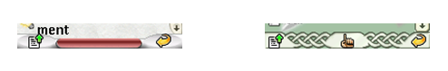
Home Screen
Portal theme example - Graphical elements
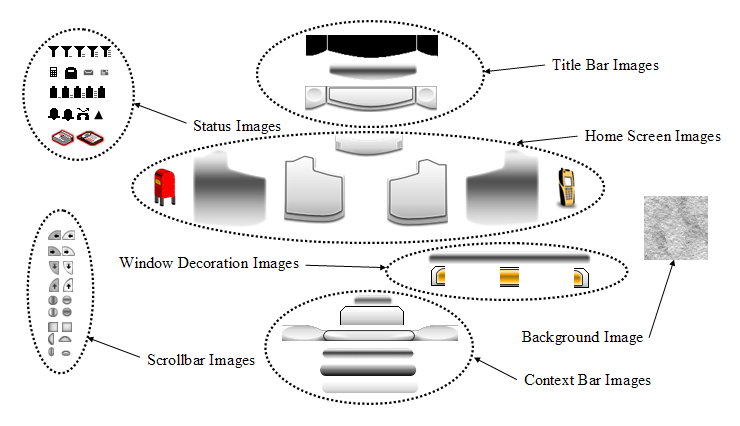
Portal theme example - Composition
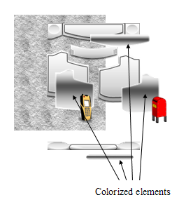 | 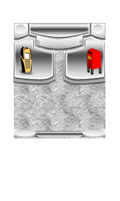 | 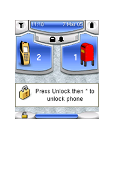 |
| Exploded View | Composed View | Colorized View |
Fantasy theme example - Graphical elements
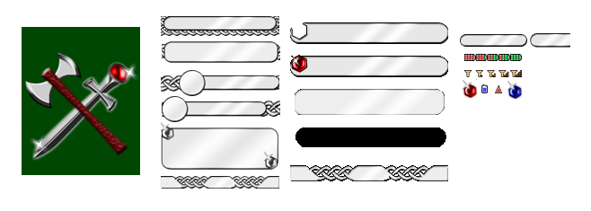
Fantasy theme example - Composed
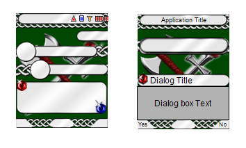
Fantasy theme example - Exploded
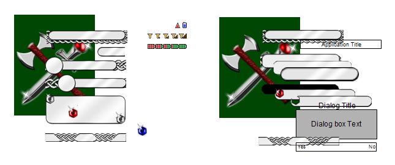
Examples - Actual screenshots
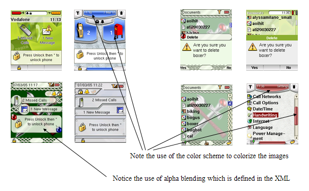
Tips
- The software can compose and colorize the images.
- The software can perform alpha blending.
- If designing in Photoshop, consider using layers.
- When adding color that could be part of the user selected color scheme, instead colorize layers that contain those areas.
- Images are not required to be flattened.
- Instead we will require some of the layers as separate images.
- The layers that get colorized should be saved as grey-scale images.
- Save the images with the transparency or mask for the layer.
- There is no need to restrict the palette to 256 colors or web-colors, most devices have 16bit or better displays.
- You can use a full 32-bit palette for the images.
- We recommend saving the images in PNG format instead of as GIF.
System
Notification Images (32x32, custom)
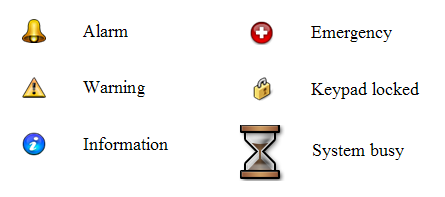
Context Menu Icons (16x16)
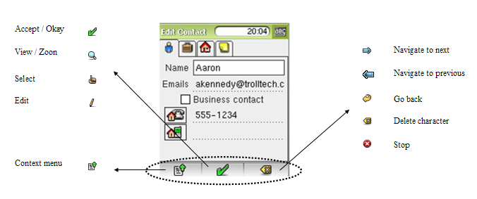
Applications
Internal Icons
Examples (14x14, 16x16 and 22x22)
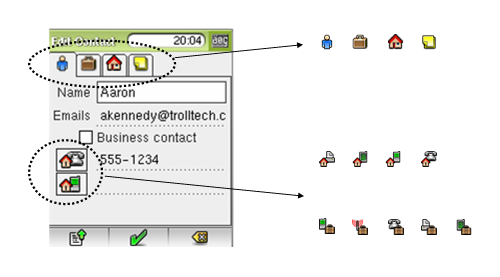
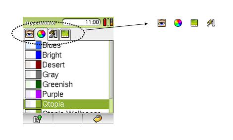
Notes
- The size of these icons depends on the resolution of the device.
- The typical size for icons is 22x22 for devices with a 240x320 display resolution.
- And 16x16 and 14x14 for lower resolutions (often the same images are used but scaled down, however if required, hand tweaked images for smaller sizes can be provided if required).
- For a given resolution there are approximately 100 to 150 smaller icons as part of the UIs for the current Qt Extended applications.
- Many of the applications internal icons may not need redesign to fit with a new style or theme, some are fairly generic in design.
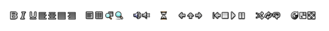
Application-specific Images (custom)
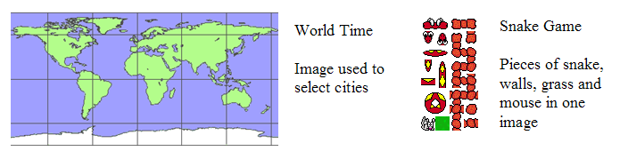
Application-specific Images Notes
- If choosing to modify application specific images, generally keep the size of the image the same.
- For certain images, the exact position of what is inside the image matters.
- For example, the map of the world image must keep the exact same edges around the areas of land.
- The snake game image finds sub-elements to draw from areas inside the image which can't change.
| Copyright © 2009 Trolltech |
Trademarks |
Qt Extended 4.4.3 |